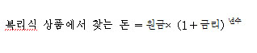

■ 단리와 복리의 차이는?
예를 들면 설명 드리면 다음과 같습니다. 어느 날 천년 묶은 여우가 재테크의 중요성을 깨닫고 예금을
하기로 했습니다. 산길에서 주운 거금 100원을 들고 은행으로 간 것입니다. 물론 사람으로 변신하고
갔습니다. 여우는 은행직원에게 괜찮은 예금을 추천해달라고 했습니다. 은행직원은 단리상품이지만, 연 10%의
이자를 주는 상품이 있다고 했습니다. 10%면 짭짤했습니다. 은행직원의 말을 믿고 100원을 맡겼습니다.
그리고 시간이 흘렀습니다.
첫해에도 이자 10원, 둘째 해에도 이자 10원, 백년 뒤에도 10원, 천년 뒤에도 10원. 꼬박꼬박
10원의 이자가 생겼습니다. 시간이 흘러 천년이 지났습니다. 여우는 예금을 찾으러 은행으로 향했습니다.
여우는 1만 100원(원금100원+이자 1만원(10×1,000년))을 찾을 수 있었습니다.
하지만 기분이 좀 찝찝했습니다. 천년간이나 예금했는데 이자가 1만원밖에 안 되다니. 천년 묶은 여우는
열심히 공부했습니다. 그리고 마침내 은행에는 단리상품만 있는 게 아니라 복리상품도 있다는 것을 알게
되었습니다. 설명에 따르면 복리상품은 이자에 이자가 붙는다고 했습니다.
첫째 해: 100원×10%=10원
∴이자=10원 ⇒ 원금100원+이자10원 = 110원
둘째 해 : 110원×10%=11원
∴이자=11원 ⇒ 110원+이자 11원 = 121원
셋째 해 : 110원×10%=12원
∴이자=12원 ⇒ 121원+이자12원 = 133원
꿋꿋하게 계산하던 여우는 생각을 바꿨습니다. 어찌 이런 무식한 계산을 계속하겠습니까? 공식을 찾아봤습니다. 역시나 공식이 있었습니다.

복리식
상품에서 찾는 돈 100원을 천년 동안 연 10% 복리로 예금하면….에고고
24,699,329,180,059,900,000,000,000,000,000,000,000,000,000원!
이게 뭡니까? 여우는 상상하지 못한 일이었습니다. 인류의 가장 위대한 발명품이 ‘복리’라고 했던 아인슈타인의
일화가 결코 과장된 게 아니었던 것입니다.
하지만 딱 여기까지입니다. 우리에게는 너무 소중한 복리지만, 은행의 입장에서 보면 복리는 나쁜 놈입니다.
가능하면 복리예금을 꼭꼭 숨기고, 단리예금만 팔아야 합니다. 실제로 금융기관에서 판매하는 예금 중에
복리상품은 많지 않습니다. 거의 대부분이 단리상품입니다.
그렇다고
실망할 필요는 없습니다. 우리 주변에 복리예금과 비슷한 성격의 상품이 있습니다. 펀드가 바로 복리상품입니다.
100원을 투자해서 10%의 수익, 즉 10원을 벌어들이면, 다음에 110원을 모두 투자하기 때문입니다.
110원을 투자해서 또 10%의 돈을 벌면, 다음해에도 그 돈을 몽땅 투자합니다. 복리예금과 다를 게
없습니다.
우리는
펀드수익률이 20%라고 하면 ‘와!’ 하는 게 아니라 ‘에이’ 하고 실망합니다. 펀드는 수익률이 기본
30~40% 정도 되어야 한다고 생각하는 경향이 있습니다. 하지만 복리의 힘을 안다면 20%의 수익률이
천문학적인 결과를 가져올 수 있다는 사실을 알 수 있습니다.
이제
막 태어난 자식의 탄생을 기념해 1,000만원을 연 수익률 20%의 펀드에 60년 동안 묵혀뒀다고 칩시다.
자그마치 5,634억 7,514만원(1,000만원×(1+0.2)^30년)을 손에 쥘 수 있습니다. 물가가
뛰는 걸 감안해도 요즘
돈으로 거의 300억 에 해당하는 돈입니다. 앞으로 60년간 자식놈이
열심히 놀고먹어도 60년 뒤에 300억이 생기는 것입니다.
요즘 펀드가 이렇게 인기가 높아진 것은 은행금리보다 수익률이 높은 점이 가장 중요한 요인이겠지만, 어쩌면
그 배후에 있는 복리효과가 상당한 영향력을 행사했을지도 모릅니다.